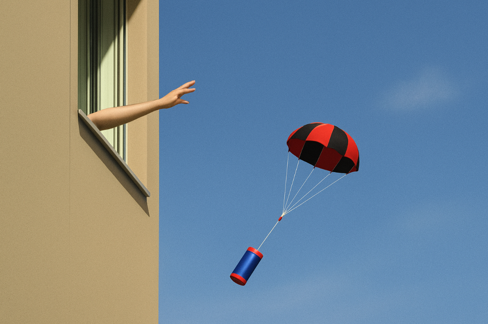

¿Qué ocurre durante la misión?
¡Ha llegado el "Día del lanzamiento"! En esta fase, dejamos de ser constructores para convertirnos en operadores de vuelo. Nuestra misión es ejecutar el lanzamiento de forma segura, asegurar que los sensores están activos y, tras la recuperación del MiniCanSat, transformar todos esos números registrados en información que podamos entender.
Para alcanzar la altitud necesaria, realizaremos el lanzamiento utilizando métodos como la suelta desde un edificio alto, el impulso de nuestro cohete de agua, el transporte mediante un dron o cualquier otro sistema que permita liberar nuestro satélite desde cierta altura.
Científicos en acción (ODS 13: Acción por el clima): Al recopilar y analizar datos reales de nuestro entorno (como la temperatura o la luz durante la caída), estamos dando los mismos pasos que los científicos e ingenieros que monitorizan la salud de nuestro planeta.

Nuestro objetivo en esta fase será:
- Observar el comportamiento del paracaídas durante el descenso.
- Verificar que la Micro:bit transmite los datos correctamente por radio.
- Analizar los datos obtenidos y compararlos con nuestras hipótesis iniciales.
La misión paso a paso
Nos enfrentamos al momento más importante de la misión: ponemos a prueba nuestro MiniCanSat, recogemos datos reales durante el vuelo y los analizamos como auténticos equipos científicos. Para que el proceso sea un éxito y nos dé tiempo a todo, dividiremos esta fase en dos sesiones:
Sesión 1: Vuelo y Recuperación
- Check-list previo.
Antes de salir a la zona de lanzamiento, verificamos las pilas, la conexión de los sensores y que el paracaídas está bien plegado. - Activación y Conexión.
Encendemos la Micro:bit del satélite y comprobamos que nuestra "Estación de Tierra" (conectada al PC o dispositivo) recibe la señal de radio correctamente. - Cuenta atrás y lanzamiento.
Ejecutamos el lanzamiento manteniendo las normas de seguridad. Durante el vuelo, un miembro del equipo observa el descenso visualmente mientras otro vigila la recepción de datos en la pantalla. - Recuperación de la Unidad.
Localizamos el MiniCanSat, lo recogemos con cuidado y comprobamos si ha sufrido algún daño estructural.
Sesión 2: Análisis de Datos
- Descarga y limpieza de datos.
Exportamos los datos de la Estación de Tierra (en formato .csv o Excel). Es muy importante eliminar los datos grabados antes y después del vuelo (por ejemplo, el tiempo que estuvimos caminando hacia la zona de despegue) para quedarnos solo con los números del "tiempo real de misión". - Visualización científica.
Nuestro/a Científico/a de datos liderará la creación de las primeras gráficas de líneas para ver cómo cambiaron la temperatura, la luz y la aceleración durante la caída, comparándolo con lo que esperábamos que ocurriese.
**Cuestionario: Nuestra ''licencia de vuelo''
Vamos a demostrar que nuestro equipo está preparado para la fase más crítica. Leeremos atentamente cada pregunta para superar este test antes de salir al lanzamiento. ¡Mucha suerte!
**Rúbrica
- Actividad
- Nombre
- Fecha
- Puntuación
- Notas
- Reiniciar
- Imprimir
- Aplicar
- Ventana nueva
| 4 EXCELENTE | 3 SATISFACTORIO | 2 MEJORABLE | 1 INSUFICIENTE | |
|---|---|---|---|---|
| Protocolo de seguridad | Verifico personalmente mi parte del check-list (pilas, encendido, radio o paracaídas) ANTES del lanzamiento. (2) | Realizo una comprobación visual rápida, pero olvido marcar físicamente el documento del check-list. (1.50) | Necesito que el docente me obligue a parar y verificar los componentes porque iba a lanzar sin comprobar. (1.25) | Omito las comprobaciones e intento iniciar la operación directamente. (1) |
| Ejecución dlanzamiento | Lanzamos el cohete, el paracaídas se despliega frenando la caída, y recuperamos el satélite sin daños estructurales. (2) | Lanzamos, pero el paracaídas tarda en abrirse o el satélite sufre daños muy leves y reparables al aterrizar. (1.50) | El lanzamiento falla en el primer intento, el paracaídas no se abre y el satélite cae de forma brusca al suelo. (1.25) | El satélite sufre daños graves o se destruye debido a una mala planificación o ejecución del vuelo. (1) |
| Recepción de telemetría | Registramos los datos en tierra, generamos el archivo .csv y limpiamos meticulosamente los datos inservibles. (2) | Recibimos datos y guardamos el archivo .csv, pero sufrimos interrupciones o no eliminamos el "ruido" inicial. (1.50) | Visualizamos los datos en pantalla, pero dependemos del docente para conseguir guardar el archivo final. (1.25) | Perdemos la conexión de radio por mala configuración y no obtenemos registros de la caída. (1) |
| Análisis científico | Analizamos el .csv transformándolo en gráficas claras de líneas (temperatura, luz, aceleración) con ejes etiquetados. (2) | Generamos gráficas, pero olvidamos poner títulos, etiquetar los ejes o los datos se ven algo amontonados. (1.50) | Presentamos los datos en formato de tabla numérica, pero no logramos generar gráficas visuales que los expliquen. (1.25) | No logramos transformar los datos brutos en ningún formato visual o tabla comprensible. (1) |
| Trabajo en equipo | Cumplo mi rol bajo presión y mantengo la calma, ayudando proactivamente a mis compañeros durante el vuelo. (2) | Realizo mi tarea, pero me cuesta coordinarme con los demás en el momento de tensión del lanzamiento. (1.50) | Me distraigo en el momento del vuelo y necesito que me recuerden qué debía mirar o hacer. (1.25) | Abandono mi puesto, no colaboro o dificulto la labor del resto del equipo durante la operación. (1) |
Diario individual de Misión
Antes de terminar esta fase del proyecto, dedicaremos entre 10 y 15 minutos a reflexionar, en grupo y de manera individual, sobre lo aprendido durante esta fase de nuestro proyecto.
Dejaremos constancia de nuestro aprendizaje. Rellenaremos nuestro propio documento Diario individual de misión MiniCanSat y lo guardaremos en nuestra carpeta personal.
Además, cada equipo actualizará el Diario de misión MiniCanSat de equipo, incluyendo los avances en la programación, pruebas realizadas y ajustes necesarios.
Completar este diario nos ayudará a ser conscientes de nuestro progreso, superar obstáculos y compartir información clave con el equipo. Nos tomaremos unos minutos al final de cada sesión para reflexionar sobre estos puntos.
📖 Contenidos del Diario de Aprendizaje (clic para mostrar)
- 🧠 Reflexión personal
- ¿Qué tareas he realizado hoy?
- ¿Qué dificultades he encontrado y cómo las he resuelto?
- 🌟 Aprendizaje diario
- ¿Qué conceptos nuevos he aprendido?
- ¿Qué ideas o habilidades he mejorado?
- 🤝 Colaboración en el equipo
- ¿Cómo ha sido mi comunicación y trabajo con el equipo?
- ¿Qué aspectos podría mejorar en la colaboración?
- 📝 Otra información
- Anotaciones adicionales sobre el proceso, ideas o problemas.
- Diario de equipo: ¿Qué información de mi diario individual es útil para el grupo?
- El momento del vuelo: Describe qué sentimos durante la cuenta atrás y el descenso. ¿Funcionó el paracaídas como esperábamos?
- Gestión de incidentes: ¿Hubo algún problema técnico durante el lanzamiento? Si es así, ¿cómo reaccionó nuestro equipo?
- De números a ideas: Al ver la primera gráfica, ¿qué es lo que más nos ha sorprendido de los datos obtenidos?
- Autoevaluación: ¿Qué nota le pondríamos a nuestro nivel de atención y colaboración durante la recogida de datos?